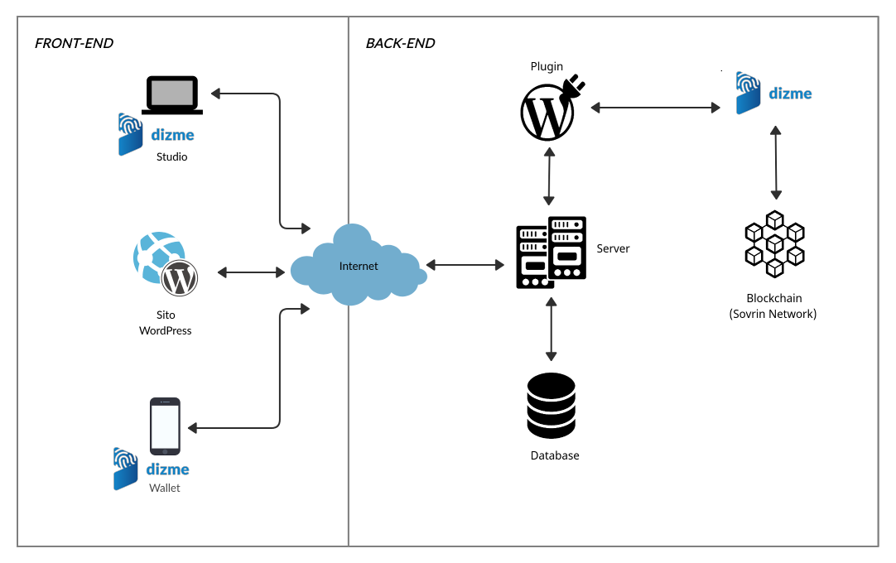

The corporate site of Araneum Group srl, including intranet area,
is based on WordPress, which according to recent statistics powers
39% of all Internet Sites.
We planned to build a WordPress Plugin for signing up and
authentication, which enables to issue the Employee credentials and
eventually to verify them for authentication and authorization,
enabling access to the services of the site using Verifiable
Credentials.
The plugin :
Technical description of the solution
The plugin acts both as an issuer and a verifier of credentials and
is plug and play, interacting with Dizme API.

Dott. Fabio Lecca:
CTO Araneum Group srl
Graduated from University "La Sapienza" of Rome
More than 20 years in development and project management, expert
in Blockchain Technologies
(certifications: Linux Foundation LFS170x, LFS171x, LFS172x,
LFS173x in progress)
Ing. Paolo Mazzitti:
Graduated from University "Roma Tre" of Rome
(certifications: Linux Foundation LFS170x, LFS172x, LFS173x in progress)
The plugin is a fully-working POC
With some investments and further work, it can: